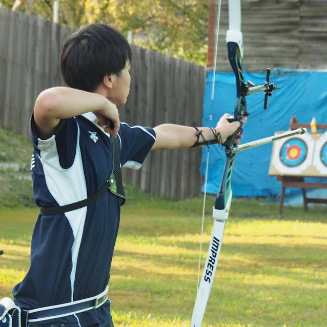

５回目の今日は法学部法学科の麻生真太郎くんです！麻生くんは来年度会計を務める部員で65代の貴重な男子部員です。
法学科の良いところは通年科目が多い点です。成績の大半が学年末テストで決まるので、前期は部活や自分のやりたいことを優先しながら余裕を持って勉強をすることができます。
履修は「Rakutenみんなのキャンパス」で充実度や楽単が分かるので参考にして頂くといいと思います。
テストは苦手科目と得意科目を把握してそれに応じた勉強を計画的に行うのがおすすめです。
1人で練習ができるスポーツなのでマイペースな自分にとって良いなと思いました。また自分が好きな青を基調としたユニフォームとカッコいい弓を持って練習する先輩方に感激しぜひ入部したいと思いました。
アーチェリー部はノルマ制の面が強いため、テスト前には自主練等のまとまった時間に本数を射つことにしています。また、学期末テスト・レポートがある週はノルマの減免ができるので、それを利用することもあります。
先輩から後輩へのサポートが手厚いことです。
まず初心者の方は新人練という1対1もしくは1対2で先輩から指導を受けながら行う練習が一年間あります。少人数でかつ一人一人に丁寧な指導をして頂けるので初心者の方でも正しい射型を習得することができます。指導外でも射型や用具の使い方で不明な点があれば気楽に指導をして頂くことができます。
私は中学・高校と他の運動部に所属していましたが先輩からのサポートはズバ抜けて手厚いと思っています。
オンライン授業はオンデマンド型と同時視聴型があります。オンデマンド型は音声ファイルや動画を視聴しながら授業を受けるスタイルです。同時視聴型はzoomを使って同時に授業を受けるスタイルです。G-portのシラバスで授業スタイルは確認できます。
対面授業よりも時間的な拘束が少なく、家で授業を受けられるのでついだらけてしまうことがあり困ってます笑。
学習院大学には沢山の魅力的な部活やサークルがありますが、その中でぜひアーチェリー部を候補にして頂けると嬉しいです。
いかがだったでしょうか。履修のコツや部の手厚いサポートがあることなどを話してくれました。次回は経済学部経済学科の池永奈々美さんです！